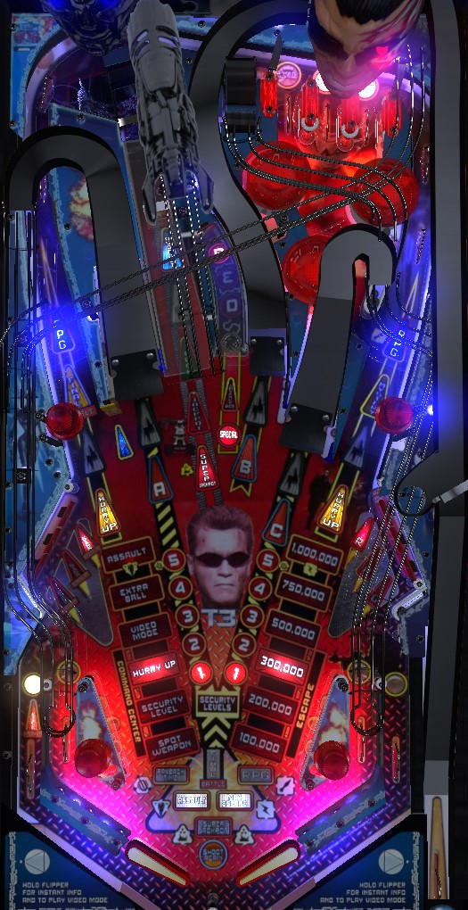

Not to be confused with Terminator 2: Judgment Day (Bally Williams, 1991).
Shoot the center lane repeatedly to qualify and earn locks for multiball; jackpots are also at the center lane. Completing the top lanes, bottom lanes, or both on hard settings advances the left orbit's mode ladder. Completing the lower right standup targets qualifies the RPG backbox game that can grow to very large values and is often disabled in tournaments. Just like in Terminator 2, shooting both of the two main ramps 5 times each starts Payback Time, where all major shots score 1,000,000 for 20 seconds.
Terminator 3 does not explicitly have a skill shot. At the start of the ball, Arnold Schwarzenegger will inform you of what shots to hit, but this is just a tutorial for how to advance features rather than a proper skill shot; he will often tell you to shoot the ramps to work toward Payback Time, the right orbit if RPG is lit, or the left orbit if Extra Ball or Assault is lit. When you plunge, you get to pick one of three awards; the selected awards change every few second or on flipper hits. The first three awards are always TX Challenge, Mystery, and Bonus Multiplier; picking TX Challenge or Mystery will replace it on the next ball with Lock Ball (toward multiball) or Play RPG. Bonus Multiplier is always available as an option, and awards 3 bonus multipliers, not just 1. All other features are described in more detail throughout the guide.
Roll through an unlit lane anywhere in the game to light it. On easy settings, the 3 top lanes and 4 bottoms lanes are two separate groups. On hard settings, all 7 lanes form a single group. Both flippers can be used to operate lane change, which rotates where the lit lane(s) are within each group. If all 7 lanes form one group, lighting all 7 advances the bonus multiplier and qualifies the next Command Center award at the left orbit. If the lanes are split into two groups, completing either group will qualify a Command Center award, but only completing the top lanes will give a bonus multiplier advance as well. Qualified Command Center awards flash on the playfield, while solidly lit awards have been earned. Awards are always qualified and played in order. Played and qualified awards are remembered from ball to ball.
Starting Assault is one of the five requirements for Final Battle wizard mode.
Shoot the left or right ramp when there is a flashing number in front of it to light that number solidly. Light the same number on each ramp to advance to that Security Level, 1 through 5. Making Security Level 5 on both ramps starts Payback Time, where every shot in the game scores 1,000,000 points for 20 seconds. Collecting a Mystery award via the left post target or the right orbit during Payback Time will almost always restart the Payback Time timer. Starting Payback Time once is one of the five requirements for Final Battle wizard mode.
If ramps are comboed with one another without missing, their value increases. The second ramp in a combo scores 250,000 points; the third ramp in combo scores 500,000; any ramps after that in combo score 750,000 points each.
Shoot the drop target in the center TX lane to reveal the lock, then shoot the lane again to lock a ball. Starting with the second multiball, the drop target only stays down with the lock revealed for about 10 seconds before popping back up and blocking the lock again. Lock 3 balls to start multiball.
In multiball, there are 3 jackpots available at the drop target in the TX lock lane worth 1,000,000 points each. After the first 2 jackpots, the drop target stays up. After the 3rd jackpot, the drop target stays down for about 10 seconds. Shooting into the lock itself while the drop target is down scores a super jackpot; the first super jackpot in a multiball scores 5,000,000 points, and further jackpots in the same multiball score 10,000,000 points each. If the super jackpot is not collected in time, the drop target pops back up, and it must be knocked down again for another super jackpot chance (doing so scores another standard jackpot and another 1,000,000 points). After scoring a super jackpot, you must shoot the left, center, and right ramps in that order to restart the jackpot sequence. If the B or C are flashing as the currently-needed ramp, you only have about 10 seconds to collect that ramp before losing credit for the A or B respectively and needing to collect it again. There is no quick multiball restart.
Collecting a multiball super jackpot is one of the five requirements for Final Battle wizard mode.
Starting Red the first time requires 3 shots to the captive ball, and starting Red again after that requires 6 hits. When Red begins, the three ramps are flashing, and you have 10 seconds to shoot all three. Making a flashing shot scores 500,000 points, but does not add to or reset the timer; rather, hitting the captive ball adds 5 seconds to the Red timer, and hitting any lower left or lower right standup target adds 2 seconds to the timer. There cannot be more than 12 seconds on the Red timer. Completing all of the flashing shots scores 1,000,000 points, spots a Weapon, and begins a new wave of Red. In each new wave, 4 of the 5 ramps and orbits are flashing; the one that is not flashing is the shot that was used to complete the previous Red wave. These rules continue until the Red timer expires. There is a considerable amount of grace period where the Red timer shows 00 seconds but the lower standup targets and the captive ball can still be used to add time.
Red mode can only be stacked with Multiball or Assault if Multiball or Assault was started first. Payback Time can be started at any time. If Red, Payback Time, and either Multiball or Assault are all running at the same time, Blitz will be running as well. During Blitz, all switch hits anywhere in the game score 100,000 points. Blitz ends as soon as any of its component parts also end (i.e. letting the Red or Payback Time timers expire, or returning to single ball play to end Multiball or Assault).
The first 6 shots to the right orbit each score and advance the lit value on the playfield, in the sequence 100,000 - 200,000 - 300,000 - 500,000 - 750,000 - 1,000,000. All right orbit shots after the 6th on each ball also score 1,000,000 points. The right orbit value is reset at the end of each ball, as well as immediately after playing Final Battle wizard mode. Collecting a 1,000,000 point right orbit shot is one of the five requirements for Final Battle wizard mode.
Spelling RPG at the lower right standup targets lights the right orbit for an RPG round. The exact rules for RPG rounds vary, but the general goal is always to shoot the lit targets. A cannon swivels back and worth; when the ball is fully settled in the cannon, pull the gun trigger to fire it. The value of RPG is a hurry-up; the first RPG starts at 10,000,000 points and counts down to 1,000,000 before timing out, and each completed level of RPG adds 2,500,000 to the starting value and 1,000,000 to the ending value. (Some versions of the ruleset for Terminator 3 do not scale the RPG values.) Most RPG rounds can be done in 3 shots; it's quite difficult to score more than 50-70% of the starting value from an RPG round. Some RPG round rulesets I've seen are:
The RPG feature is frequently disabled by operators in copies of Terminator 3 on location, especially in tournaments, due to their mechanical unreliability. If the RPG is completely disabled, making a shot that would activate the RPG (during single ball play, Final Battle, or Assault) instantly completes that RPG opportunity, including scoring the full hurry-up value where applicable.
Completing three rounds of RPG is one of the five requirements for playing Final Battle wizard mode.
Each shot to the center ramp outside of Multiball or Assault is worth one Bullet Hole. Various thresholds for Bullet Hole shots give awards: in my experience, 3 and 12 light Mystery, 6 and 15 spot a Weapon, 9 awards extra ball, and 30 lights special at the captive ball.
The right orbit and the post target between the left orbit and the left ramp are occasionally lit for Mystery. I cannot for the life of me figure out what lights the Mystery and which location it appears at, other than as an occasional award from making enough Bullet Holes at the center ramp. If you shoot the Mystery via the right orbit, an elaborate animation picks an award for you, but if you shoot the Mystery via the post target, the award is instantly given. The right orbit only seems to be able to be lit for Mystery in single ball play when RPG is not lit. An incomplete list of Mystery awards includes:
The Mystery post target is usually lit during Payback Time, and the award you get for hitting is almost always Restart Payback Timer, which gives you a fresh 20 seconds of Payback Time.
TX Challenge is available as a skill shot award, and can happen naturally if a ball falls into the TX lane's lock from the back. The latter case can occur on any weak left orbit shot or on a right orbit shot that was not lit for either RPG or Mystery. TX Challenge can only be played in single ball, non-mode play. You are told to Shoot Anything within 5 seconds; "Anything" consists of the two orbits, the three ramps, and the TX lock lane, but not the captive ball. If you do shoot anything, your award is 500,000 points times the number of seconds left on the clock. If the shot you made was the TX lock lane, a Bonus Challenge begins, where you get to shoot anything one more time for the same awards. A maximum of 2,500,000 points (or 5,000,000 if you triggered Bonus Challenge) is possible. If you start Bonus Challenge, you need to collect something from the Bonus Challenge to earn a Weapon. Otherwise, you are given a weapon for hitting any shot during the regular TX Challenge.
Hitting the number of pop bumpers shown on the dot display gives a Power surge award. The first award is at 40 bumpers and scores 2,000,000 points. The second award requires 45 more bumpers and scores 2,250,000 points. Any awards past that require 50 further bumpers and score 250,000 more points than the previous award did.
After collecting all 5 of the game's major tasks- Payback Time, Assault, Super Jackpot, Max Escape, and RPG- Final Battle will be lit at the left orbit during single ball, non-mode play. Final Battle is a 4-ball multiball and comes in two phases.
In phase 1, you are tasked with "completing all flashing shots". There is a timer for 10 seconds and a very long ball saver. At first, the flashing shots are all three ramps and both orbits. Making any flashing shot unlights it and resets the timer to 10 seconds. After all 5 flashing shots are made, you need to shoot the TX lock lane 3 times to destroy TX and enter phase 2. All shots in phase 1 score 250,000 points. It is my assumption that the Final Battle chance instantly ends if you drain back to single ball play after the timer has expired, but there is a long enough ball save that this shouldn't happen.
Phase 2 of Final Battle consists of almost everything being started at once. You are paid a Red bonus of 1,000,000 points plus an additional 250,000 for each Weapon collected from Red mode in the game so far. Multiball rules are in play, meaning jackpots and super jackpots can be collected at the TX lane. Payback Time is running, so all major shots score 1,000,000 points. Red is running, so flashing shots score more points and hitting all flashing shots awards Weapons. Multiball, Payback Time, and Red all running at once means Blitz is in play, so every switch in the game scores 100,000 points. Also, at the start of Final Battle and any time all of the flashing white shots are completed, the RPG is qualified, and hitting the lone moving lit target with the RPG scores 5,000,000 points. Like Assault, the RPG is active while the balls on the main playfield are in live play as well. In Final Battle, Payback Time + Red + Blitz do not have a timer, and are constantly running until single ball play resumes. A strong Final Battle is worth upwards of 100,000,000 points. When single ball play resumes, Final Battle completely ends; the 5 major tasks, the left orbit Command Center awards, and the right orbit Escape values are all reset, and you begin again.
Terminator 3 has a conventional in/out lane setup. The in/out lanes are lit when a ball rolls through them, and completing a set (either on their own or in conjunction with completing the top lanes) qualifies a Command Center award at the left orbit. There is a center peg between/below the flippers.
There is an automatic kickback in the left out lane. It unlights once it is used. To relight it, complete the 3-bank of standup targets in the lower left.
Bonus is calculated as 100,000 points times your current Security Level, plus 250,000 points times your current number of Weapons, times the bonus multiplier. Bonus multiplier is advanced by 1 with each completion of the top lanes (or you may need to complete all 7 lanes if Assault has already been played), by 3 if Bonus X is chosen as a skill shot award, and by 5 if Bonus X is earned as a Mystery award. Max bonus multiplier is 10x. Further advances of the bonus multiplier past 10x award 1,000,000 points each. There is no way to hold the bonus multiplier from one ball to the next and there is no mid-ball bonus collect.
| If you need... | Try... |
| 500,000 points | ...comboing a couple ramp shots, or shooting the Escape right orbit a couple times. |
| 2,000,000 points | ...starting multiball, just to get a couple jackpots and have multiple balls on the playfield, or shoot a couple high value Escape right orbits. |
| 5,000,000 points | ...playing Payback Time, an RPG round, a hurry-up, or a multiball with the intention of at least reaching the super jackpot, even if you don't score it. |
| 10,000,000 points | ...playing video mode or playing multiball with the goal of getting a super jackpot. In competition/novelty play, you can also get an instant 10,000,000 points from an extra ball. |
| 25,000,000 points | ...starting Multiball, then starting Red or Payback Time to get a good stack going, then play the multiball long enough to score at least one super jackpot. |
| 100,000,000 points or more | ...intentionally starting Blitz (Multiball or Assault, then Red, then Payback Time, having all three going at once) or making progress toward Final Battle wizard mode. |